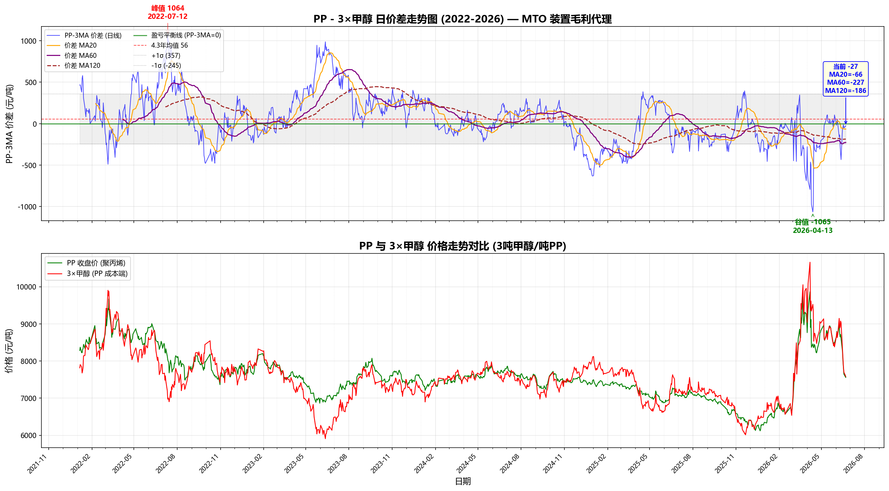

6月15日美伊签署停战谅解备忘录，霍尔木兹海峡通行预期改善，触发化工板块系统性回调。PTA（-5%）、甲醇（-6%）、乙二醇（-4%+）、PP（-4%+）全线暴跌。从高峰到谷底：PTA从6800→5780（-15%），甲醇从3061→2650（-13.4%），乙二醇从5400→4228（-21.7%），PP从8290→7647（-7.8%）。以下为地缘冲突高位（6月初）至缓和后（6月中下旬）的完整传导分析。
核心逻辑：原油是化工品之母，中东地缘通过量（进口中断）+价（原油成本）双渠道传导。6月15日停战后第一条逻辑链断裂。
| PXN（PX-石脑油价差） | 258.87 $/t | 历史高位收窄 |
| PTA加工费 | 479.07 ¥/t | 扩张中 |
| 煤制甲醇利润 | 500-700 ¥/t | 高位 |
| PDH制PP利润 | -2223.74 ¥/t | 深度亏损 |
| 油制PP利润 | -855~-1791 ¥/t | 亏损 |
| 煤制PP利润 | +174~+1890 ¥/t | 暴利 |
| MTO利润（PP-3MA） | 深度亏损 | 多套停车 |
| 石脑油裂解价差 | 350-400 $/t |
| PTA 现货vs2609基差 | +198 | 现货升水 |
| 甲醇 MA2609-2701价差 | - | 远月贴水 |
| 乙二醇 EG现货基差 | +122~+150 | Backwardation |
| PP PP2609-2701价差 | 333-570 | Backwardation |
四品种均呈现近强远弱（Backwardation）结构——近端受低库存/进口中断支撑，远月定价产能过剩/地缘缓和。
| PTA开工率 | 56.95% | 近5年新低 |
| 二季度PTA产量 | 同比-5~-8% | 大幅减产 |
| 社会库存 | 426.3万吨 | 环比-28万吨 |
| 去库状态 | 连续6周去库 | 5年同期最低 |
| PX开工率 | 79.3% | 结束11周去库转累 |
| 检修产能 | 千万吨级别 | 二季度集中检修 |
| 聚酯开工率 | 80.95% | 刚需为主 |
| 织造开工率 | 57%（同比-21%） | 近5年同期次低 |
| 现货均价 | 6,045 ¥/t | 6月18日 |
| 加工费 | 479 ¥/t | 修复中 |
| 基差 | +198 | 现货强 |
| 进出口 | 4月进口仅0.08万吨 | 几乎归零 |
PTA是整个化工链中供应端最紧的品种——开工率56.95%创近5年新低，库存连续6周去化至近5年同期最低。尽管织造终端需求疲弱（开工同比-21%），但PTA自身减产力度更大（二季度产量同比-5~-8%），供不应求驱动去库。PX端结束11周去库转为累库，PXN价差从320-350美元高位开始收窄，PTA加工费被动修复至479元/吨。
中期风险：高加工费将刺激检修装置提前重启（当前低负荷难以维持），一旦PTA开工回升叠加聚酯淡季，去库趋势可能逆转。
6月18日MA2609收盘2566元/吨（-2.88%），9-1月差+90。国内开工率87.16%，周产量206.22万吨。港口库存40.15万吨（周环比-2.03万，月环比-18.87万）。MTO开工75.44%（周环比-0.77pp）。MTO盘面利润-423元/吨（周环比-419）。现货3047元/吨，基差+481（高升水）。甲醛31.22%/醋酸74.59%/MTBE 49.33%。
来源：宝城期货金融研究所 陈栋(F0251793/Z0001617) · 证监许可【2011】1778号
| 国内开工率 | 78.58% | 环比小幅提升 |
| 5月产量 | ~777万吨 | 环比-9万吨 |
| 5月进口量 | ~31-32万吨 | 环比-25万吨，历史低位 |
| 6月进口预估 | 45-55万吨 | 恢复缓慢 |
| 港口库存 | 63-66万吨 | 5年同期低位 |
| 流通货源 | 17.9万吨 | 可流通极少 |
| 西北工厂库存 | 持续去化 | 偏低水平 |
| 伊朗装置 | 6套已重启但无装船 | 仅Kimiya+Dana停车 |
| MTO加权开工率 | 78.49%（回落中） | 盛虹已停车 |
| 外采MTO开工 | 77.4% | 经济性差 |
| 盛虹MTO | 停车中 | 无明确重启计划 |
| 宁波富德 | 传闻近期重启 | 短停后 |
| 诚志一期 | 6.8停车10天 | 计划内检修 |
| 青海盐湖 | 5.26停车1个月 | 计划检修 |
| 宁夏宝丰 | 取消外采甲醇 | 下游产品价格弱 |
| 传统下游 | 进入淡季降负 | MTBE -4.93%, 醋酸 -3.41% |
甲醇是化工板块最典型的"冰火两重天"品种：港口库存（63万吨）处于5年最低位，流通货源仅17.9万吨；但MTO装置因深度亏损大面积停车——盛虹停车、诚志短期检修、宁夏宝丰取消外采，MTO加权开工从高位回落。这是典型的供给驱动上涨遭遇需求负反馈的博弈格局。
最大变量——伊朗：伊朗6套装置已重启但尚无装船消息（中东海运仍存障碍），一旦霍尔木兹海峡开放+伊朗装船恢复，进口量可能从45万吨跃升至80+万吨，甲醇将由多转空。煤制甲醇利润高达500-700元/吨，高利润刺激国内开工维持高位。
价格锚点：3100元以上MTO负反馈加剧，2650元以下煤化工成本支撑介入。6月16日甲醇已跌至2684（日内低点2650），接近下边界。
| 乙烯法开工率 | 下降 | 季节性检修 |
| 合成气法（煤制） | 维持高负荷 | 利润较好 |
| 总开工率预估 | 65-70% | 稳中有降 |
| 社会库存 | ~163万吨 | 从高位降50万吨 |
| 港口库存 | 60万吨 | 持续去化 |
| 4月进口量 | 环比-20万吨 | 同比-30+万吨 |
| 中东进口占比 | >65% | 几乎中断 |
| 聚酯开工率 | 82% | 低于往年 |
| 现货均价 | 4,325 ¥/t | 6月18日 |
| 基差（本周） | +122~+125 | 正向市场 |
| 基差（6月下） | +138~+145 | |
| 基差（7月下） | +145~+150 | |
| 基差（8月下） | +110~+120 | 远月转弱 |
| 进口到港预估 | 6月环比+5% | 基数仍低 |
乙二醇是四个品种中进口依存度最高的品种，中东（沙特/科威特/伊朗）占进口量超过65%。霍尔木兹海峡封锁直接导致中东乙二醇货源几乎中断，4月进口量环比骤降20万吨。国内煤制EG维持高负荷也无法弥补缺口。社会库存从3月高位下降约50万吨至163万吨，港口库存降至60万吨，预计去库趋势可持续到8月。
但隐忧在于成本端：石脑油价格大跌（755美元/吨）拖累乙烯法EG成本下移，煤制EG利润持续回落。期限结构上，8月下基差（+110~+120）显著弱于7月下（+145~+150），反映市场已在定价进口恢复预期。正套（买近抛远）是基本面驱动的自然策略。
中期风险：若霍尔木兹海峡解封，中东EG集中到港可能引发去库逆转，远月合约将率先崩塌。
关键数据来源：6月11日生意社港口基差报价（本周/下周/6月下/7月下/8月下）显示正向市场结构，但远月基差收窄反映远期供应恢复预期。【来源：生意社 2026.06.11】
| 2026年总产能 | 5459.5万吨 | 全球最大 |
| 2026年新增产能 | 570万吨 | 镇海50+华锦100+古雷95 |
| 2026年产量预计 | +191万吨（+4.8%） | |
| 消费增速 | 仅2.9% | 远低于产能增速 |
| 产需缺口 | 扩大至45.26万吨 | 过剩加剧 |
| 5月检修产能 | 317万吨 | PDH集中降负 |
| PDH开工率 | 大幅下滑 | 深度亏损 |
| PDH制PP成本 | 10,625 ¥/t | 丙烷高企 |
| PDH制PP亏损 | -2,224 ¥/t | 产业链最惨 |
| 油制PP亏损 | -855~-1,791 ¥/t | |
| 煤制PP利润 | +174~+1,890 ¥/t | 暴利 |
| 华东现货（拉丝） | 9,450-9,550 ¥/t | |
| 基差范围 | -213~+437 | 剧烈波动 |
| BOPP开工率 | 59.64% | 加工费历史低位 |
| 塑编开工率 | 37.66% | 低迷 |
PP是四个品种中中长期预期最悲观的品种。2026年新增570万吨产能（镇海炼化50+华锦阿美100+福建古雷95等），而消费增速仅2.9%，产需缺口扩大至45万吨。5月虽然检修317万吨阶段性支撑价格，但PDH深度亏损（-2224元/吨）导致的减停是被迫的不可持续的——一旦丙烷跌价或PP反弹，PDH装置将立刻重启释放供给。
结构分化极端：煤制PP暴利（+1890元/吨）vs PDH巨亏（-2224元/吨），通用料严重过剩 vs 高端料（茂金属/光伏级/锂电隔膜专用）仍依赖进口。期限结构上，PP05-09价差高达333-570元/吨（Backwardation），反映近端检修+远端产能过剩。
出口故事：4月中国PP出口至印尼10.28万吨（环比+218%），但印尼6月2日反倾销终裁（浙江石化5.52%、其他中国企业18.01%关税）将显著压制出口空间。6个月免税窗口期后，出口竞争力回归成本基本面。
印尼反倾销委员会（KADI）对原产于沙特/菲律宾/韩国/马来西亚/中国/新加坡/泰国/越南的PP均聚物作出肯定性终裁，建议征收5年反倾销税。
| 征税对象 | 从价税 | 从量税 |
|---|---|---|
| 浙江石油化工 | 5.52% | 0.055$/kg |
| 中国其他生产商 | 18.01% | 0.179$/kg |
来源：印尼反倾销委员会(KADI)公告 2026.06.02 · 同花顺期货通 2026.06.10
当前MTO综合利润深度亏损，盛虹+诚志+青海盐湖同时停车，宁夏宝丰取消外采甲醇，MTO外采甲醇需求已减少约20-25万吨/月。这形成了甲醇的"天花板效应"——甲醇价格越高，MTO停车越多，甲醇需求越差。
逻辑：(1) MTO利润已至历史极端低位，均值回归概率大；(2) 甲醇边际需求（MTO）在大幅收缩，而PP边际供给（MTO停车减少丙烯）在收缩——甲醇基本面边际转弱、PP边际转强；(3) 待MTO利润修复至盈亏平衡附近平仓。当前PP-3MA价差处于历史低位，具有安全边际。

📈 PP-3×甲醇日价差走势图（2022-2026）与PP/3×甲醇价格走势对比
风险：若伊朗甲醇突然大量到港，甲醇暴跌将推动MTO利润暴利修复，此时策略获利最大。
PTA和乙二醇共享下游——聚酯。当前PTA处于主动减产去库（强现实），乙二醇处于被动进口中断去库（事件驱动），两者短期均有支撑。但核心差异在于：
| 维度 | PTA | 乙二醇 |
|---|---|---|
| 供给收缩性质 | 主动减产（利润驱动） | 被动中断（地缘驱动） |
| 可逆性 | 高利润→快速重启 | 依赖中东局势 |
| 库存绝对水平 | 426万吨（5年最低） | 163万吨（去化中） |
| 下游需求 | 共享聚酯（80-82%开工，旺季未至） | |
| 利润状态 | 加工费479（修复中） | 一体化利润被动修复 |
数据来源：隆众资讯/华安期货 2026.06.01-18 · 我的钢铁网 2026.06.18
| 指标 | PTA | 甲醇 | 乙二醇 | 聚丙烯 |
|---|---|---|---|---|
| 交易所 | 郑商所 | 郑商所 | 大商所 | 大商所 |
| 主力合约 | TA2609 | MA2609 | EG2609 | PP2609 |
| 交易单位 | 5吨/手 | 10吨/手 | 10吨/手 | 5吨/手 |
| 最新价 | 5,868 | 2,684 | 4,427 | 7,647 |
| 6月15日以来跌幅 | -9.5% | -12.3% | -17.2% | -7.8% |
| 开工率 | 56.95%↓ | 78.58%↑ | 65-70%↓ | 检修中↓ |
| 库存趋势 | 6周去库→5年最低 | 6周去库→5年最低 | 持续去库→8月 | 预计6月累库 |
| 成本利润 | 加工费479（修复） | 煤制利润500-700 | 一体化被动修复 | PDH亏损-2224 |
| 进口依赖度 | 几乎自给 | ~15%（伊朗关键） | ~40%（中东65%） | 出口导向 |
| 地缘敏感度 | 中（经原油/PX） | 极高（伊朗直供） | 极高（中东占比65%） | 中低（丙烷间接） |
| 需求驱动 | 聚酯（纺织） | MTO+传统下游 | 聚酯（纺织） | 包装/汽车/基建 |
| 中长期方向 | 待检修结束转弱 | 进口恢复后转空 | 去库结束转弱 | 产能过剩压制 |
| 战略评级 | ★★★★ 近强远弱 | ★★★ 高波动博弈 | ★★★★ 去库最强 | ★★ 中长期偏空 |
核心逻辑：EG去库确定性强（可持续至8月），近月基差+145~+150，远月8月基差收窄至+110~+120，反映进口恢复预期。无论地缘如何演变，近强远弱格局短期不会改变。
风险：中东局势突然解封→进口暴增→近月也崩
核心逻辑：MTO利润历史极端低位，盛虹/诚志停车的供给效应向内烯烃传导，甲醇边际需求走弱+PP边际供给减少。PP-3MA价差处于极端低位。
风险：伊朗甲醇突然大量到港→甲醇暴跌→PP跟着跌
核心逻辑：PTA主动减产（可持续但高利润下易逆转），乙二醇被动收缩（地缘驱动不可预测）。选择更可控的基本面驱动品种做多，地缘驱动品种做空。
时间窗口：PTA检修结束前（1-2个月），乙二醇进口实质性恢复前
核心逻辑：3100元以上MTO负反馈加速，多套装置停车会自我修正价格。伊朗装置已全部重启只待装船，一旦海运恢复进口量将暴增。煤制甲醇高利润刺激国内供给。
入场区间：3000-3100元做空，止损3200，目标2600-2700
核心逻辑：2026年新增570万吨产能是史上最大投产潮，消费增速仅2.9%。PDH当前深度亏损下的减停不可持续，一旦丙烷回落或PP反弹，供给洪水将迅速释放。
入场区间：反弹至8000-8200做空，目标7000-7200
核心逻辑：四个品种的核心变量（中东地缘）极度不可预测——美伊从"签约"到"撕约"仅用5天（6.15签→6.20伊朗重新封锁霍尔木兹）。化工品波动率已升至历史高位，买入跨式期权或宽跨式可双向获利。
特别适合：甲醇（对伊朗最敏感）、乙二醇（对中东封锁最敏感）
| 日期 | 事件 | 影响品种 | 方向 |
|---|---|---|---|
| 2026.06.02 | 印尼KADI对PP均聚物反倾销肯定性终裁（浙江石化5.52%，其他中国18.01%） | PP | 偏空 |
| 2026.06.08 | 诚志一期MTO装置停车10天 | 甲醇 | 偏空 |
| 2026.06.10 | 印尼PP/PE进口关税从5-15%统一下调至0%（6个月免税窗口） | PP | 偏多 |
| 2026.06.15 | 美伊签署停战谅解备忘录 → 化工板块全线暴跌（PTA -5%, MA -6%, EG -4%, PP -4%） | 全部 | 崩盘 |
| 2026.06.16 | 甲醇2609跌至2650低点（日内跌5.73%） | 甲醇 | 暴跌 |
| 2026.06.18 | PTA现货均价6045，基差+198；PTA开工率56.95%创5年新低 | PTA | 偏多 |
| 2026.06.18 | 乙二醇6月17日收盘4228，现货4325；港口库存60万吨 | 乙二醇 | 震荡 |
| 2026.06.20 | 伊朗重新关闭霍尔木兹海峡（美伊签约仅5天即反复） | 甲醇/EG | 利多 |
| 2026.06.22 | 卡塔尔联合声明当日油价偏弱震荡，化工板块继续寻底 | 全部 | 偏空 |
数据来源：同花顺期货通、隆众资讯、生意社、金投网、华安期货、大地期货、光大证券 · 2026年6月
| 数据类别 | 来源 | 日期 |
|---|---|---|
| 🏦 甲醇权威数据 | 宝城期货 橡胶甲醇原油日报 | 2026.06.18 |
| 🏦 硫磺/基础化工权威 | 东方证券 中东变局对化工之四深度报告 · 天风证券 基础化工周报 | 2026.06.02-08 |
| 🏦 跨境套利策略 | 中信期货 中国商品期货跨境套利周报 | 2026.06.17 |
| PTA供需/库存/开工率 | 隆众资讯 · 我的钢铁网 · 雪球(中期研究院月报) | 2026.06.01-18 |
| PTA成本/加工费/价格 | 华安期货投研 · 生意社 | 2026.06.07-18 |
| 甲醇供需/进口/库存 | 隆众资讯 · 卓创资讯 · 新浪财经观点汇总 | 2026.06.01-18 |
| 甲醇MTO装置动态 | 大地期货研究院 · 东方财富 | 2026.06.11 |
| 甲醇行情价格 | 生意社 · 同花顺期货通 | 2026.06.15-16 |
| 乙二醇供需/库存/开工 | 百家号AI报告 · 新浪财经观点汇总 | 2026.06.07-18 |
| 乙二醇基差报价 | 生意社 · 同花顺 | 2026.06.11-17 |
| PP供需/产能/PDH利润 | 百家号(冰火两重天) · 同花顺 · 新浪财经 | 2026.05.07-06.10 |
| PP印尼反倾销 | 印尼反倾销委员会(KADI) · 同花顺期货通 | 2026.06.02-10 |
| PP行情价格 | 金投网 · 东方财富 | 2026.06.22 |
| 地缘事件时间线 | 综合各来源交叉验证 | 2026.06.08-22 |
| 美伊停战6.15暴跌 | 百家号(美伊风云突变) · 同花顺快讯 | 2026.06.15-22 |